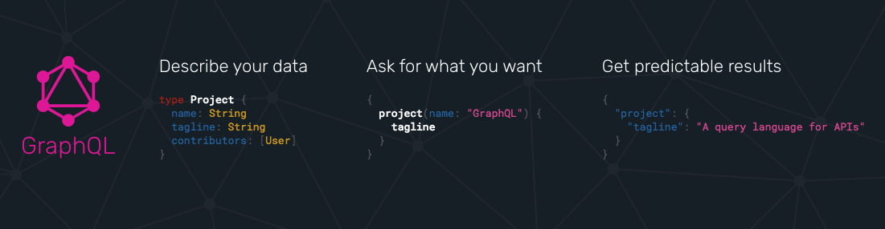

RIP REST...
Welcome GraphQL
What???
Current challenges in REST
What is GraphQL?
Example and deep dive
Q&A
Current challenges in REST
- Most of the Internet is now Mobile
- Makes clients slow by default
- Batch endpoint, data inclusion, request grouping etc is neither RESTful nor straightforward to implement
- No standards mean too many standards
- Resource discovery is painful
- Bloated responses
- CRUD only
What is GraphQL?
- is NOT a query language for any Database
- is NOT a library or a framework
- is NOT a transport protocol
- is a specification
- provides rules for schema definitions, type system and parsing
- gives structure for data query and mutations
- is language agnostic

in a nutshell
schema example
type MyEntity {
id: ID!
name: String!
hasSpecialPower: Boolean,
relatedEntities: [OtherEntity!]
}
type Query {
myEntities(limit: Int = 10): [MyEntity!]
myEntity(id: ID!): MyEntity
}
type Mutation {
createMyEntity(name: String!): MyEntity
}
client query/mutation example
query {
myEntities {
id
name
hasSpecialPower
}
myEntity(id: 10) {
hasSpecialPower
}
}
mutation {
createMyEntity(name: "Awesome GraphQL") {
id
}
}
Where does it fit?
with connected database

 as a layer for integrating existing systems
as a layer for integrating existing systems
 hybrid layer (connected database + existing systems)
hybrid layer (connected database + existing systems)